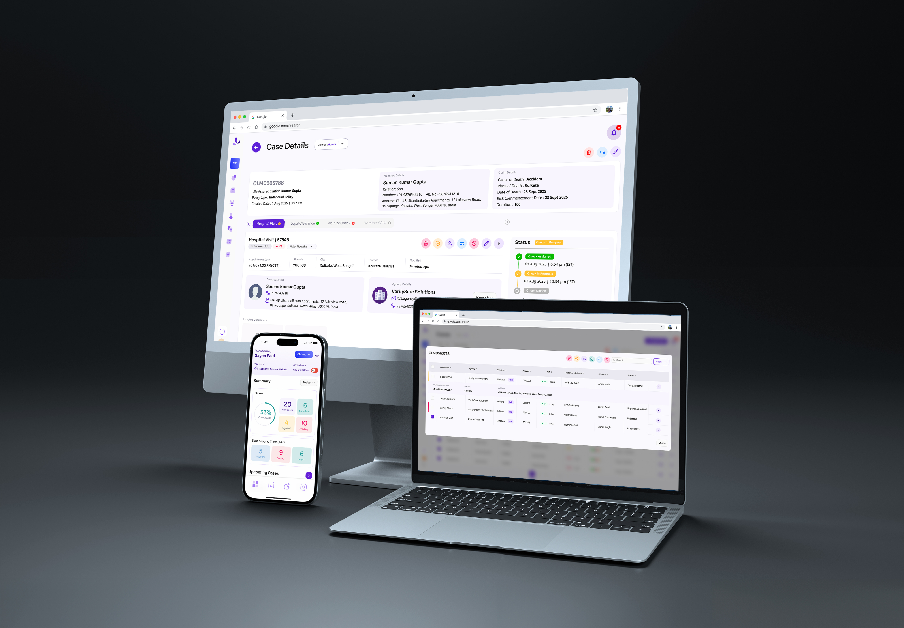

selected
experiences

Built for Trust. Designed for Scale.
Kriyam.ai brings order to one of insurance's most vulnerable touchpoints — field verification. We replace ad-hoc, untraceable processes with a secure, compliant, and fully auditable platform that gives agencies control, speed, and confidence at every step.
View CaseBuy it. Use it. Sell it.
A trust-first resale marketplace designed to remove fraud, friction, and fear from second-hand commerce in India.
View Case
Building Tomorrow's Smart Factories
End-to-end operational intelligence for manufacturers. Designed with factory workers, built for speed.
View Case
Attendance, payroll, and HR
Fully automated, beautifully simple. From check-in to payslip, everything your team needs in one place.
View Case